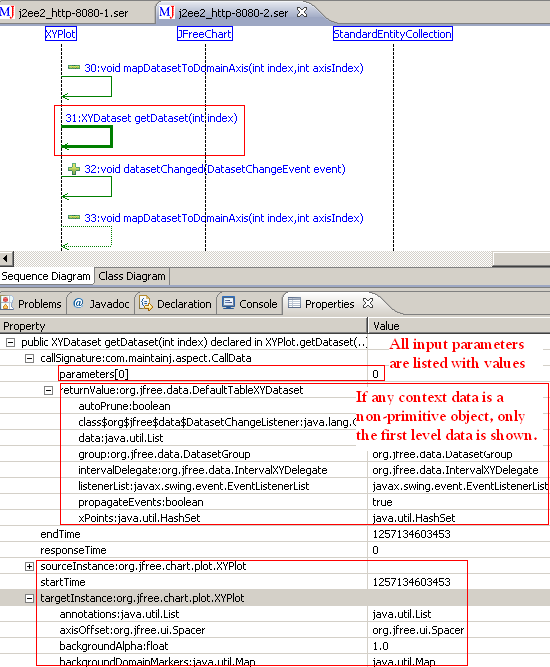

The current release version of MaintainJ does not work for Android applications. This is because MaintainJ instruments the class files as they are loaded into the memory, but the Android VM does not allow this.
To avoid this problem, the Android code needs to be instrumented at compile time rather than at load time. Following this method, MaintainJ can be used on Android apps to generate the runtime sequence and class diagrams.
The instructions work for the Android apps developed in Eclipse. I assume that you are already familiar with the Android application development in Eclipse and MaintainJ plugins are already installed in your Eclipse.
1. Install the correct version of AJDT from the AJDT download page.
2. In Eclipse, follow Window, Preferences, AspectJ Compiler, Possible Optimizations. Check 'No inline' option if it is not already selected.
3. Under your Android app project, create 'libs' folder if it is not already created. Copy MaintainJAspect.jar and aspectjrt.jar files to this folder. Get MaintainJAspect.jar from eclipse\plugins\com.maintainj.launcher.core_3.6.x . Get aspectjrt.jar from eclipse\plugins\org.aspectj.runtime_1.6.12.20110613132200
4.Take a backup of the .project file of your Android app project and do the following changes to add AspectJ builder to your project.
Add the following node in buildSpec node.
<buildCommand>
<name>org.eclipse.ajdt.core.ajbuilder</name>
<arguments></arguments>
</buildCommand>
Remove the following node if it is already present.
<buildCommand>
<name>org.eclipse.jdt.core.javabuilder</name>
<arguments></arguments>
</buildCommand>
5. Add both libs/MaintainJAspect.jar and libs/aspectjrt.jar to the project classpath. The steps to add the jars to classpath are, right click the project, Properties, Java Build Path, Libraries, Add Jars, select libs/MaintainJAspect.jar
After adding, your .classpath file should look like below:
6. In your Android app project, create package com.maintainj.androidaspect . Copy MaintainJTracer.aj to this package.
7. In the following line of MaintainJTracer.aj, change the com.msi to your package name.
public pointcut anyExecution(): execution(* com.msi..*(..)) || execution(com.msi..*.new(..));
In the following line, change com.msi.manning.restaurant.RestaurantFinderApplication to your class name.
public pointcut beforeMain(): execution(public void com.msi.manning.restaurant.RestaurantFinderApplication.onCreate());
8. Build the project and run it. It should run as it was running before the changes.
9.Download MaintainJAndroidTraceManager.zip and import the project into your Eclipse workspace. Build and deply it to the emulator. This application helps you to start and stop tracing. You will see this app with the name 'MaintainJ Trace Controller'. When this app is launched, you should see 'Stop Tracing' button and a text box to enter the trace file name.
10.Run a use case in your android application.
11. Go back to the 'MaintainJ Trace Controller' app, enter a trace file name like 'sampleTraceFile' and click 'Stop Tracing'. The trace file(s) will be written to sdcard/Download folder.
12. Pull the trace files from that folder into your Eclipse project created by following File, New, Project, MaintainJ, MaintainJ Trace Files Project.
13. Open the trace files to see the sequence and class diagrams.
14. You might use the sample app RestaurantFinder.zip to try this.
September 07, 2010
The major enhancement in this milestone is to show the context of each method call. It shows the method call arguments, return value, source instances of the call. These values are shown in the properties view when the call is selected in the sequence diagram. The values of basic data types like String, int are shown in tool tip when mouse is hovered over a method call.
The other change in this version is that the trace file must be placed in a special project created by the wizard at File->New->Project->MaintainJ->MaintainJ Trace File Project. This project creates an embedded derby database to store the trace file information. Having the trace file data in database serves two purposes.
a) It reduces the memory usage as the entire trace file data need not be loaded
into memory.
b) It helps to search for a method or data like a specific value of a parameter.
This search can operate on a trace file or across trace files. The search
feature will be added in V3.1.
There is no need to manually change the aop.xml as in the first milestone release.
The values of basic data types like String, int are shown in tool tip when mouse is hovered over a method call.
The installation procedure is same as it is for the release version. Check the quick start guide for detailed installation instructions.
MaintainJ Feature Update url for Eclipse 3.3 and above: http://www.maintainj.com/updates/3.0.1
MaintainJ Feature Update url for Eclipse 3.2: http://www.maintainj.com/updates/3.0.1/3.2
MaintainJ J2EE Server Feature Update url: http://www.maintainj.com/updates/3.0.1/server
MaintainJ Feature Zip (for Eclipse 3.3 and above): MaintainJ_3.0.1.zip
MaintainJ Feature Zip (for Eclipse 3.2): MaintainJ_3.0.1_ForEclipse_3.2.zip
MaintainJ J2EE Server Feature: MaintainJ_J2EE_Launcher_3.0.1.zip
MaintainJ.war to instrument J2EE applications: MaintainJ.war
November 4, 2009
The major enhancement in this milestone is to show the context of each method call. It shows the method call arguments, return value, source and target instances of the call. These values are shown in the properties view when the call is selected in the sequence diagram.
If the data is primitive, String or single dimension arrays of primitive or String, they are displayed. If the data is an object, only the first level primitive attributes of that object are shown.

This version works the same as the release version in every other way except showing the context data. By default it does not log the context of a calls to the trace file. You need to do a small change to the generated aop.xml to log context data. The location of the aop.xml can be found here. Remember to select the 'Do not regerate aop.xml' checkbox at the bottom of the Aspect tab not to overwrite your changes.
3.1 For J2SE applications or any application that you start with main() method, the third line in the generated aop.xml looks as below.
<concrete-aspect name="com.maintainj.inst.J2SEAspect" extends="com.maintainj.aspect.J2SEExecutionAspect">
You need to change the super aspect name to J2SEExecutionDataAspect as below.
<concrete-aspect name="com.maintainj.inst.J2SEAspect" extends="com.maintainj.aspect.J2SEExecutionDataAspect">
3.2 For J2EE applications,
1. Change the super aspect name from ExecutionAspect to ServletDataAspect
2. Add -Xset:weaveJavaxPackages=true to 'weaver options'
3. Include 'javax.servlet.http.HttpServlet' to instrumentation scope.
Here is a sample aop.xml after the change:
<aspectj>
<aspects>
<concrete-aspect name="com.maintainj.inst.J2EEAspect" extends="com.maintainj.aspect.ServletDataAspect">
<pointcut name="anyExecution" expression="execution( * *.*(..)) || execution( *.new(..))"/>
</concrete-aspect>
</aspects>
<weaver options="-proceedOnError -Xset:weaveJavaxPackages=true">
<include within="org.jfree.chart..*"/>
<include within="javax.servlet.http.HttpServlet"/>
<include within="com.maintainj..*"/>
</weaver>
</aspectj>
For J2EE applications, the HttpServletRequest parameter of the service method shows the request parameters.
MaintainJ Feature Update url: http://www.maintainj.com/updates/3.0
MaintainJ J2EE Server Feature Update url: http://www.maintainj.com/updates/3.0/server
MaintainJ Feature Zip: MaintainJ_3.0.0.zip
MaintainJ J2EE Server Feature: MaintainJ_J2EE_Launcher_3.0.0.zip
MaintainJ.war to instrument J2EE applications: MaintainJ.war
1.In this release context data is shown in the properties view. This will also be shown in the diagram itself - either below the call or in the tooltip popup.
2. For large diagrams of say 6000 calls, lot of memory is taken up because all
context data is loaded into memory when the diagram is rendered. This has to be better managed.
3. The data for JDBC calls - the sql statement itself and the data will be added.
The HttpServletRequest parameters in the service() method are shown in this
release.
4. The other major enhancement for V3 is search capability.
5. And finally the important impact analysis capability will be added.
Keep checking for these exciting new features of MaintainJ!